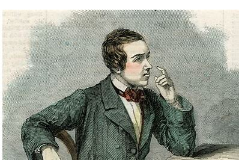

Paul Morphy: O Gênio do Xadrez Romântico
Paul Morphy nasceu em Nova Orleans, em uma rica e distinta família. Seu pai, Alonzo Michael Morphy, foi advogado e legislador do estado de Louisiana. De ascendência espanhola, portuguesa e irlandesa, Alonzo casou-se com Louise Thérèse Félicité Thelcide Le Carpentier, uma mulher talentosa na música e de origem crioula francesa.
De acordo com seu tio, ninguém ensinou Paul a jogar xadrez formalmente — ele aprendeu apenas observando. Aos 12 anos, já possuía um nível excepcional de jogo e era capaz de disputar partidas simultâneas às cegas. Em 1850, enfrentou o mestre húngaro Johann Löwenthal, vencendo as três partidas que jogaram, consolidando sua reputação como um prodígio.
Além de ser um gênio no xadrez, Morphy tinha incríveis habilidades de memorização. Aos 19 anos, formou-se em Direito, mas como era jovem demais para exercer a profissão, decidiu dedicar-se ao xadrez. Aos 20 anos, tornou-se o primeiro campeão dos Estados Unidos em Nova Iorque, em 1857.
Em busca de novos desafios, Morphy viajou para a Europa, onde enfrentou e derrotou os melhores jogadores da época, incluindo Adolf Anderssen, considerado o melhor da Europa. Morphy venceu sete partidas, perdeu duas e empatou duas contra Anderssen, provando ser o jogador mais forte de sua geração.
Após retornar triunfante aos Estados Unidos em 1859, Morphy surpreendeu a todos ao abandonar o xadrez. Sua carreira no jogo durou apenas 18 meses. Infelizmente, a saúde mental de Morphy deteriorou-se com o tempo, e ele começou a sofrer de delírios de perseguição e paranoia. Ele faleceu aos 47 anos, vítima de um ataque cerebral.
“No xadrez, Morphy foi provavelmente o maior gênio dentre todos.”